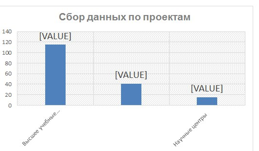
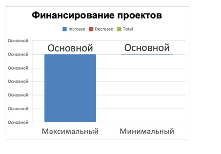

1.4 Выявить перспективные научные разработки, объекты интеллектуальной собственности, результаты научно-технической деятельности
Обзор проблемы и актуальности темы
Научные разработки и инновации играют критическую роль в формировании более современного и здорового общества, способного максимально использовать преимущества новой экономики знаний. Современные научные разработки становятся все более сложными, цифровыми, междисциплинарными, а также зависимыми от больших объемов данных и вычислительных мощностей.
В задачах выявления перспективных научных разработок и объектов интеллектуальной собственности, возникают вопросы относительно эволюции процессов создания результатов научно-технической деятельности и того, как они меняются с появлением новых научных знаний. Всемирная организация интеллектуальной собственности (ВОИС) в своем авторском договоре от 1996 года отмечает важность соблюдения баланса между авторскими правами и более широкими общественными интересами, особенно в области образования, исследований и доступа к информации. Декларация ЮНЕСКО от 2001 года признает необходимость рассмотрения объема, степени и применения прав интеллектуальной собственности в контексте справедливого производства, распределения и использования знаний.
Цели и задачи исследования. Научные достижения для решения современных проблем и стимулирования устойчивого развития способствует формированию целенаправленного и стратегического вектора научных исследований.
Целью данного отчета является проведение критического анализа источников информации о взаимосвязи между объектов интеллектуальной собственности (ОИС), и защитой прав интеллектуальной собственности и о том, как они могут прогрессировать реализацию и применение результатов научно-технической деятельности.
Анализ этих вопросов позволит лучше понять, как можно совместить политику защиты прав интеллектуальной собственности и операционные системы по внедрению и стимулированию научно-технических разработок, помимо элементарного создания и регистрации прав на объекты интеллектуальной собственности.
Методология. Для успешной реализации проектов и обеспечения максимальной широты исследований, были направлены письма в учебные заведения высшего образования, а именно в 115 ведущих вузов. Эти письма содержат приглашения к участию в инновационных проектах, направленных на раскрытие новых горизонтов в области науки и технологий.
В дополнение к вузам, обращения были отправлены в 41 научно-исследовательские институты, с учетом их опыта и компетенции в различных областях, также письма были отправлены в 15 научные центры.
Для составления данного отчета, был проведен анализ современного состояния результатов научно-технической деятельности с точки зрения объектов интеллектуальной собственности и прав интеллектуальной собственности. Были изучены статистические отчеты, научные публикации, базы данных прав интеллектуальной собственности, чтобы отразить актуальное положение дел и основные тенденции в этой области.
Собранная информация была подвергнута анализу, включая определение достигнутого уровня научно-технической деятельности в РК с точки зрения объектов интеллектуальной собственности и прав интеллектуальной собственности.
Выявлены охранные документы, которые содержат объекты интеллектуальной собственности и перспективные результаты научно-технической деятельности.
Сформирована группа патентов для дальнейшей оценки. При составлении отчета применялся государственный стандарт о патентных исследованиях, научно-исследовательской работе и системе разработки и постановки продукции на производство.
Отчет основан на разнообразных источниках, включая научные статьи, законодательство и ведомственные отчеты, опубликованные на русском и английском языке, чтобы получить всеобъемлющее понимание проблемы.
Провести патентный поиск
В данном отчете проводится патентный поиск с целью формирования реестра из не менее 100 научных разработок (резюме проектов) по приоритетным направлениям развития науки с обоснованиями перспективности и области применения за последние 10 лет. В процессе патентного поиска были использованы следующие источники:
ESPACENET - система поиска патентных документов более чем 90 стран мира и международных организаций (включая российские патентные документы).
PATENTSCOPE - бесплатная поисковая система, предоставляемая Всемирной организацией интеллектуальной собственности (ВОИС), которая позволяет получить доступ к миллионам патентных документов.
ЕАПАТИС - система разработанная Евразийским патентным ведомством (ЕАПВ) с Индикатором повышения эффективности и качества проведения патентных поисковых и патентно-информационных обеспечительных экспертиз заявок на изобретение.
В указанных системах имеется возможность провести любые тематические, нумерационные и именные поиски. В системах реализованы средства метапоиска во внешних патентных БД цифровых библиотек интеллектуальной собственности (IPDL) и информационных системах свободного доступа сети Интернет: USPTO, PatentScope и др.
В результате проведения поиска сформирован список найденных патентных документов и которые предоставляются с их реферативно-библиографическими описаниями, с дальнейшей возможностью получения полного описания документа и дополнительной информации о нем из внешних источников.
Ссылки на использованные патентно-информационные источники:
a)Евразийская БД: 1) http://www.eapatis.com
б) Казахстанская БД: 1) Национальный институт интеллектуальной собственности. https://gosreestr.kazpatent.kz
в) Зарубежная БД: 1) Европейская патентная организация (ЕПО), http://preview.espacenet.com http://www.espacenet.com/
г) Международная БД: https://patentscope.wipo.int/search/ru/search.jsf
Выявить одинаковые или схожие разработки.
Приложение 1 - международные заявки на патент по системе РСТ поданных казахстанскими заявителями.
Обоснованиями перспективности и области применения, является то, что процесс проверки разработок, поданных на получения патента проходят экспертизу международного поискового органа на новизну, изобретательский уровень и промышленную применимость предполагая ряд этапов, которые обеспечивают высокую степень защиты для инноваций. Вот какие основные аспекты обсуждаются в рамках этого процесса:
Новизна (новшество): экспертиза проводят анализ, чтобы убедиться, что изобретение является уникальным и не имеет аналогов на момент подачи заявки на патент. Если изобретение было описано в литературе или уже получило патентное охрану где-то в мире, это может повлиять на решение о выдаче патента.
Изобретательский уровень: оценка того, насколько изобретение представляет собой значительный прогресс или шаг вперёд по сравнению с существующими технологиями.
Промышленная применимость: экспертиза также оценивают, насколько изобретение может быть успешно использовано в промышленности.
Получение или подачи международной заявки на патент, после успешного прохождения всех этапов, обеспечивает изобретателю надежную защиту, что способствует коммерческому успеху, поскольку патент дает право обладателю контролировать использование изобретения другими и обеспечивает основу для коммерциализации, лицензирования или сотрудничества с другими компаниями.
Для цели оценки научных разработок по приоритетным направлениям развития науки использовано руководство международного поиска в соответствии со статьей 15(2), (4) Руководства Договора о патентной кооперации (PCT) по проведению международного поиска и международной предварительной экспертизы разработок и статья 6 Евразийской патентной конвенции оценки критерия патентоспособности и перспективности, которая включает:
⦁ Новизна. Результаты научно-технической деятельности признано новым, если оно не является частью предшествующего уровня техники.
⦁ Соответствие научно-технической разработки предшествующему уровню техники.
⦁ Соответствие изобретательскому уровню. Проверка научно-технической разработки критериям очевидности или наличие вклада в уровень техники:
⦁ удовлетворяет ли заявленное научно-техническая разработка издавна существующей потребности;
⦁ преодолевает ли заявленная научные предубеждения;
⦁ поиск аналогичных решений, которые решают проблему или достигают аналогичный результат как заявленная научно-техническая разработка;
⦁ позволяет ли заявленная научно-техническая разработка получить неожиданный технический результат;
⦁ имеет ли заявленная научно-техническая разработка особый коммерческий успех.
4. Соответствие промышленной применимости. Оценивается возможность использования разработки в промышленности, сельском хозяйстве, здравоохранении и других областях человеческой деятельности, если по своей природе оно может быть осуществлено или использовано (в технологическом смысле) в какой-либо отрасли промышленности.
5. Проверка на полезность. Оценивается возможность научно-технической разработки обладать полезностью в промышленности, которая является:
⦁ конкретной
⦁ реальной
⦁ достоверной, промышленность включает любую физическую деятельность технического характера, т.е. деятельность, которая относится к полезным и практическим сферам.
6. Подход «проблема-решение», который состоит из следующих этапов:
⦁ определение наиболее близкого предшествующего уровня техники;
⦁ выявление объективной технической проблемы, которую необходимо решить;
⦁ рассмотрение вопроса о том, является ли заявленная научно-техническая разработка, исходя из наиболее близкого предшествующего уровня техники и объективной технической проблемы, очевидным для специалиста в данной области.
7. Оценка значительной технической ценности. Обеспечения разработки технического преимущества, которая является новым и неожиданным, и это может быть определенно связано с одним или несколькими признаками, научно-технической разработки.
8. Оценка коммерческого успеха. Определение, когда он сочетается с наличием давно существующей потребности и имеет значение, при условии, что успех достигается благодаря признакам заявленного научно-технической разработки, а не другими факторами (например, методами торговли или рекламы), и соизмерим с объемом научно-технической разработки.
Результаты. Обращения к высшим учебным заведениям, научным институтам и центрам являются ключевым шагом в создании сильного научного сообщества, способного эффективно решать актуальные проблемы исследований в различных областях. Вместе эти учреждения образуют мощную сеть, способную добиваться выдающихся результатов в области науки и инноваций.

Рисунок 1.1. Сбор данных по проектам (2018-2022 гг.)
На основании письма от ученых принято 100 проектов по приоритетным направлениям науки.
Каждый из этих проектов представляет собой уникальный вклад в различные области науки, от фундаментальных исследований до практического применения знаний в повседневной жизни. Стремление к совершенствованию научных методов, расширению технологических горизонтов и решению сложных проблем в различных сферах жизни становится главным движущим мотивом для создания этих проектов.
Проанализировали поступившие проекты по приоритетным направлениям науки. По результатам анализа показание было следующим:
⦁ Экология, окружающая среда и рациональное природопользование – 31 проектов;
⦁ Энергия, передовые материалы и транспорт – 15 проектов;
⦁ Передовое производство, цифровые и космические технологии – 6 проектов;
⦁ Интеллектуальный потенциал страны – 6 проектов;
⦁ Наука о жизни и здоровье – 6 проектов;
⦁ Устойчивое развитие агропромышленного комплекса – 9 проектов.
Можно назвать три лучших проекта по направлению Экология, окружающая среда и рациональное природопользование:
⦁ Производство сульфат железа в Казахстане – этот проект нужен в данный момент так так Производство сульфата железа может быть важным для Казахстана, особенно если страна имеет ресурсы для его производства или есть спрос на этот продукт на внутреннем или мировом рынке.
Сульфат железа используется в различных отраслях, включая сельское хозяйство, промышленность и водоочистку. Если в Казахстане есть доступные источники железной руды или другие компоненты для производства сульфата железа, а также есть спрос на этот продукт, то развитие такого производства может быть выгодным для страны.
⦁ Исследование наноструктурных и многокристальных слоёв краби кремния и оскатках материалов. Изучение наноструктурных слоев может помочь в понимании уникальных свойств этих материалов. Это знание может быть использовано для разработки новых материалов с улучшенными механическими, электрическими или другими физическими свойствами.
⦁ Исследование возможности получения хромитовых пигментов из техногенных отходов для текстильной промышленности. Специфической информацией о законодательстве и регулировании в Казахстане. Однако, если у вас есть интерес к проведению исследования в данной области, вам следует обратиться к местным органам и агентствам по науке и инновациям, таким как Национальный центр научных исследований в Казахстане, или другим подобным организациям.
По направлению Энергия, передовые материалы и транспорт:
⦁ Разработка новых высокоэффективных бактерий всё тонных фунгицидных частиц серый для создания противотационных средств и обеспечения безопасности. Необходимость разработки новых высокоэффективных бактерий зависит от конкретных целей и задач, которые ставит перед собой Казахстан в области науки, медицины, сельского хозяйства и других сферах.
⦁ Качество цифровых услуг медицинских учреждений в Казахстане в условиях пандемии: методология оценки и механизмы совершенствования. В условиях пандемии цифровые услуги медицинских учреждений могут быть весьма полезными для Казахстана по нескольким причинам: Удаленный мониторинг заболеваний, онлайн-консультации и диагностика, электронные медицинские карты, эффективное информирование населения:
По направлению передовое производство, цифровые и космические технологии:
⦁ Создание казахских героев в виде игрушек и конструкторов для детей. Игрушки в виде казахских героев могут быть способом сохранить и передать детям элементы казахской культуры. Это может включать в себя традиционную одежду, оружие, украшения и другие атрибуты, что помогает детям лучше понять и полюбить свою историю.
По направлению наука о жизни и здоровье:
⦁ Разработка эффективных параллельных вычислений алгоритмов на основании схемы динамического балансирования нагрузки для моделирования движения воздуха и носовой полости. Разработка эффективных параллельных вычислений для моделирования движения воздуха в носовой полости включает в себя несколько этапов. Один из ключевых аспектов - это динамическое балансирование нагрузки, которое позволяет эффективно распределять вычислительные задачи между различными вычислительными узлами. Более подробную информация можно прочитать в таблице 1 (Приложение 1).

Рисунок 1.2. Финансирование проектов Финальной части аналитической справки, где утверждается необходимость информационной пропаганды и финансовой поддержки лучших научных проектов, можно подчеркнуть важность данных элементов в развитии научной сферы страны. Информационная пропаганда способствует увеличению общественного интереса к науке, что может привести к большей поддержке и вниманию со стороны государственных и частных инвесторов. Таблица 1.1 (Приложение 2) образуют реестр из не менее 100 разработок (патентов) по приоритетным направлениям развития науки за последние 10 лет. Отбор международных заявок на патент по системе РСТ и евразийских патентов и заявок, поданных казахстанскими заявителями, как перспективных, может базироваться на нескольких критериях и характеристиках, которые указывают на их значимость и потенциал для долгосрочного успешного использования. Таблица 1.1. Реестр перстпективных разработок Год Направление Количество 2023 Медицина 1 2022 Горное дело 1 Машиностроение 1 Металлургия 3 Химия 1 Маркетинг 1 Медицинская техника 1 Медицина 1 Энергетика 1 2021 Технология 8 Химия 1 Энергетика 2 Маркетинг 1 Химия 1 Горное дела 1 Металлургия 2 Механика 4 Гидроэнергетика 1 Биотехнология, вирусология 1 2020 Энергетика 3 Механика 4 Фармацевтика 3 Пищевая промышленность 1 Медицина 1 Технология 4 Маркетинг 1 Строительство 2 2019 Пищевая промышленность 2 Биотехнология 1 Технология 3 Химия и металлургия 1 Механика 1 Аудиолокация 1 Двигателестроения 1 Зеленная энергетика 1 Дорожная технология 1 Сухопутное, водные, воздушные перевозки 1 Нефтяная промышленность 1 Архитектура 1 2018 Цветная металлургия 1 Производства магния и хлора 1 Теплоснабжения 1 Проектирования и строительство 1 Медицина 1 Изобразительное искусство 1 Дизайн одежды 1 Машиностроение 2 Геология 1 Механика 3 Производство строительных материалов 1 2017 Машиностроение 2 Геология 1 Индустрия развлечений 1 Производство 2 Теплоэнергетика 1 Механика 6 Производство строительных материалов 1 Электронная аналитическая техника 1 Нанотехнология 1 Агрохимия 1 Водные и воздушные перевозки 1 2016 Производство 1 Перспективные патенты могут представлять интерес для дальнейших инвестиций, разработки и коммерциализации в Казахстане и других странах-членах Евразийского экономического союза. Перспективность изобретения, охраняемого евразийским патентом, заключается в его способности оставаться актуальным и ценным в контексте евразийской экономической интеграции и развития региона. Статистический анализ в области интеллектуальной собственности в Казахстане Сбор и анализ данных. В обзоре состояния охраны интеллектуальной собственности в Казахстане за 2022 год представлены следующие статистические данные (таблица 1.2): Таблица 1.2. Количество охранных документов в Казахстане ⦁ Зарегистрировано 82,285 охранных документов на товарные знаки и знаки обслуживания. ⦁ Зарегистрировано 39,498 охранных документов на изобретения. ⦁ Зарегистрировано 7,651 охранных документов на полезные модели. ⦁ Зарегистрировано 4,116 охранных документов на промышленные образцы. ⦁ Зарегистрировано 1,032 охранных документа на селекционные достижения. ⦁ Зарегистрировано 79 охранных документов на наименования мест происхождения товара (НМПТ). ⦁ Зарегистрирован 1 охранный документ на топологию интегральных микросхем. Итого, за данный период в Казахстане было выдано 134,662 охранных документа различных категорий интеллектуальной собственности. Эти цифры отражают значительный объем работ в области охраны интеллектуальных прав и свидетельствуют о важности этой деятельности для страны. К настоящему времени, то есть на 31 декабря 2022 года, подтверждена и продлена действующими следующее количество охранных документов в Казахстане (таблица 1). ⦁ 56,391 охранных документов на товарные знаки и знаки обслуживания. ⦁ 2,836 охранных документов на изобретения. ⦁ 2,812 охранных документов на полезные модели. ⦁ 1,187 охранных документов на промышленные образцы. ⦁ 350 охранных документов на селекционные достижения. ⦁ 35 охранных документов на наименования мест происхождения товара (НМПТ). ⦁ 1 охранный документ на топологию интегральных микросхем. Итого, на конец 2022 года в Казахстане было поддержано и продлено действие 63,612 охранных документов, что свидетельствует о значительной активности и усердии в области охраны интеллектуальной собственности в стране. В 2022 году казахстанскими заявителями через национальное патентное ведомство РГП НИИС были поданы 24 международных заявок на патент по системе РСТ, и 18 заявок на выдачу евразийского патента на изобретение (таблица 1.3). Таблица 1.3 – Евразийский патенты на изобретение. Интерпретация статистических данных. Количество поданных евразийских заявок на изобретение казахстанскими заявителями в 2022 году составило 69 штук (график 1.1). График 1.1 – Поданные евразийские заявки на изобретение казахстанскими заявителями Надежность евразийского патента подразумевает, что данный патент обладает высокой степенью долгосрочной стабильности и сопротивляется различным воздействиям, таким как изменения законодательства, конкуренция и технические изменения. Это также означает, что владелец патента может быть уверен в его действительности и защите своих интеллектуальных прав в рамках евразийской экономической интеграции. Надежность патента обеспечивает его значимость и актуальность в контексте сотрудничества и развития экономических отношений между странами, объединенными в евразийском пространстве. Количество поданных евразийских заявок на промышленный образец казахстанскими заявителями в 2022 году составило 4 штук, количество промышленных образцов 7 (график 1.2). График 1.2 – Количество промышленных образцов Надежность евразийского патента на промышленный образец заключается в том, что он обеспечивает правовую защиту инновационных и дизайнерских решений на территории государств-членов Евразийского экономического союза. Важно рассмотреть несколько аспектов, которые обосновывают надежность этого вида патента: Многостранность: Евразийский патент на промышленный образец действует в нескольких странах, включая Казахстан, Россию, Армению, Кыргызстан и Беларусь. Это означает, что он обеспечивает защиту в большом регионе, что может быть особенно полезным для бизнеса, работающего в разных странах-членах ЕАЭС. Единый орган управления: Евразийским патентам управляет Евразийское патентное учреждение, что делает процесс регистрации, поддержания и оспаривания патента более прозрачным и предсказуемым. Это способствует надежности правовой системы и защите прав владельцев патентов на промышленные образцы. Защита от незаконного использования: Владельцы евразийских патентов на промышленные образцы имеют право предотвращать незаконное использование и распространение их образцов в странах-членах ЕАЭС. Это способствует защите интеллектуальной собственности и, таким образом, повышению надежности прав владельцев. Продление срока: Срок действия евразийского патента на промышленный образец составляет 15 лет с возможностью продления. Это обеспечивает долгосрочную надежную защиту для дизайнерских решений и инноваций. Международное признание: Евразийские патенты на промышленные образцы признаны в рамках Парижской конвенции и Всемирной организации интеллектуальной собственности (ВОИС). Все эти факторы делают евразийский патент на промышленный образец надежным инструментом для защиты интеллектуальной собственности и поощрения инноваций в регионе ЕАЭС. Сравнительный анализ ⦁ Изобретение Распределение по регионам выданных охранных документов на изобретение в 2022 году составило следующее (таблица 1.4): Астана – 74, Алматы – 258, Шымкент – 6, Алматинская область – 6, Акмолинская область – 5, Атырауская область – 4, Актюбинская область – 10, Восточно-Казахстанская область – 19, Жамбылская область – 10, Западно-Казахстанская область – 2, Карагандинская область – 23, Костанайская область – 7, Кызылординская область – 5, Мангистауская область – 1, Павлодарская область – 38, Северо-Казахстанская область – 4, Туркестанская область – 4, Абайская область – 2, Жетысуйская область – 0 и Улытауская область – 0. Таблица 1.4 – Распределение по регионам выданных охранных документов Итого в Казахстане было выдано 473 охранных документа на изобретение в 2022 году. Эта информация демонстрирует распределение по регионам и позволяет оценить активность инновационной деятельности в различных частях страны (таблица 1.5): Таблица 1.5 - Распределение по регионам Таблица 1.6 – Распределение выданных охранных документов на изобретение для национальных и иностранных заявителей по разделам МПК Представленные данные о количестве патентных документов в разных разделах Международной патентной классификации (МПК) указывают на распределение заявок и патентов в различных технических областях. Распределение выданных охранных документов на изобретение для национальных и иностранных заявителей по разделам МПК, каждый из которых отвечает за определенную область техники, показал следующее (таблица 6). ⦁ Раздел A - Человеку необходим для выполнения или контроля труда, или операций; транспортировка - 132: Этот раздел, связанный с трудовыми процессами и транспортировкой, имеет высокое количество патентов. Это может указывать на значительное количество инноваций в области улучшения рабочих процессов и транспортных решений. ⦁ Раздел B - Раздел B относится к работе с почвой или к земледелию; горное дело; строительство - 107: Этот раздел, связанный с сельским хозяйством, горнодобывающей промышленностью и строительством, также имеет заметное количество патентов. Это может указывать на важность этих областей в экономике. ⦁ Раздел C - Химия; металлургия - 120: Химия и металлургия играют важную роль в промышленности. Высокое количество патентов в этом разделе указывает на инновационные разработки в области химической и металлургической промышленности. ⦁ Раздел D - Текстиль; бумага - 1: Это раздел с наименьшим количеством патентов, что может указывать на меньшую активность в области текстильной и бумажной промышленности в данной стране. ⦁ Раздел E - Фиксированная техника; подача воды, вентиляция, отопление, освещение - 56: Строительство; горное дело и инженерные системы, что может отражать интерес к улучшению инженерных решений. ⦁ Раздел F - Механическая инженерия; освещение; отопление; орудия; взрывные работы - 46: Этот раздел связан с механической инженерией и инструментами. Количество патентов в этом разделе может указывать на разработки в области механических устройств. ⦁ Раздел G – Физика - 83: Физика также имеет значительное количество патентов, что может отражать научные исследования и разработки в этой области. ⦁ Раздел Н – Электричество - 41: Электричество, включая электрические устройства и системы, имеет среднее количество патентов. Общее количество патентов в каждом разделе МПК может свидетельствовать о важности и активности в соответствующей технической области. ⦁ Полезная модель. Распределение по регионам выданных охранных документов на полезную модель в 2022 году составило следующее (таблица 1.7): Таблица 1.7 – Распределение по регионам выданных охранных документов на полезную модель Астана – 159, Алматы – 317, Шымкент – 51, Алматинская область – 24, Акмолинская область – 8, Атырауская область – 6, Актюбинская область – 13, Восточно-Казахстанская область – 14, Жамбылская область – 29, Западно-Казахстанская область – 15, Карагандинская область – 82, Костанайская область – 12, Кызылординская область – 7, Мангистауская область – 18, Павлодарская область – 30, Северо-Казахстанская область – 9, Туркестанская область – 18, Абайская область – 20, Жетысуйская область – 6 и Улытауская область – 2. Итого в Казахстане было выдано 840 охранных документа на полезную модель в 2022 году. Эта информация демонстрирует распределение по регионам и позволяет оценить активность инновационной деятельности в различных частях страны. Анализ распределения выданных охранных документов на полезную модель для национальных и иностранных заявителей по разделам МПК (Международной патентной классификации) показывает следующую картину (таблица 1.8): Таблица 1.8 – Распределения выданных охранных документов на полезную модель для национальных и иностранных заявителей по разделам МПК ⦁ Раздел A - Человеку необходим для выполнения или контроля труда или операций; транспортировка - 300: Этот раздел имеет самое большое количество патентов, что может указывать на значительное количество инноваций в области, связанной с работой человека и транспортировкой. ⦁ Раздел B - Раздел B относится к работе с почвой или к земледелию; горное дело; строительство - 103: Второе по величине количество патентов в разделе B может указывать на активность в сельском хозяйстве, горнодобывающей промышленности и строительстве. ⦁ Раздел C - Химия; металлургия - 157: Химия и металлургия также имеют высокое количество патентов, что указывает на инновации в этих областях. ⦁ Раздел D - Текстиль; бумага - 6: Этот раздел имеет наименьшее количество патентов, что может указывать на более низкую активность в области текстильной и бумажной промышленности. ⦁ Раздел E – Строительство; горное дело - 90: Строительство и горное дело имеют заметное количество патентов, что отражает инновации в этих областях. ⦁ Раздел F - Механическая инженерия; освещение; отопление; орудия; взрывные работы - 49: Этот раздел связан с механической инженерией и инструментами. Уровень патентов указывает на активность в этой области. ⦁ Раздел G – Физика - 107: Физика также имеет заметное количество патентов, что может указывать на научные исследования и инновации в области физики. ⦁ Раздел Н – Электричество - 52: Электричество и связанные с ним технологии имеют среднее количество патентов. Общее количество патентов в каждом разделе МПК может отражать важность и активность в соответствующей технической области, а также интерес к инновациям в этих областях. Аналитика по статистической информации об использовании объектов интеллектуальной собственности в Казахстане Анализ состояния охранных документов в Казахстане Анализ состояния активности и разнообразии сделок и соглашений в области интеллектуальной собственности в Казахстане в 2022 году (таблица 1.9): Таблица 1.9 – Анализ состояния активности и разнообразии сделок и соглашений в области интеллектуальной собственности в Казахстане ⦁ Договоры уступки прав на объекты интеллектуальной собственности: ⦁ Всего поступило 381 договоров уступки прав на объекты интеллектуальной собственности. ⦁ Из них 345 договоров уступки исключительных прав на товарные знаки. ⦁ 9 договоров уступки прав на изобретения. ⦁ 23 договора уступки полезных моделей. ⦁ 3 договора уступки прав на промышленные образцы. ⦁ 1 договор уступки селекционного достижения. ⦁ Лицензионные договоры: ⦁ Всего поступило 375 лицензионных договоров. ⦁ 268 договоров о предоставлении права на использование товарных знаков. ⦁ 15 договоров о предоставлении права на использование изобретений. ⦁ 41 договор о предоставлении права на использование полезных моделей. ⦁ 3 договора о предоставлении права на использование промышленных образцов. ⦁ 48 договоров о предоставлении права на использование селекционных достижений. ⦁ Договоры комплексной предпринимательской лицензии и договоры франчайзинга: ⦁ Всего поступило 140 договоров комплексной предпринимательской лицензии. ⦁ 194 делительных соглашения к зарегистрированным договорам комплексной предпринимательской лицензии (франчайзинг). ⦁ 1 договор залога исключительных прав. ⦁ Распределение договоров о распоряжении исключительными правами: ⦁ Всего зарегистрировано 987 договоров о распоряжении исключительными правами на объекты интеллектуальной собственности. ⦁ 79 договоров были заключены между иностранными лицами, не резидентами РК. ⦁ 611 договоров были заключены между лицами, зарегистрированными в РК. ⦁ 15 договоров, в которых лицом передающим право, выступило казахстанское лицо, а лицом, принимающим право, являлось иностранное лицо. ⦁ 185 договоров, в которых лицом передающим право, выступает иностранное лицо, а лицом принимающим являлось – казахстанское. Общее количество договоров в 2022 году: ⦁ 355 договоров уступки прав на объекты интеллектуальной собственности. ⦁ 338 лицензионных договоров. ⦁ 1 договор залога исключительных прав. ⦁ 129 договоров комплексной предпринимательской лицензии (включая франчайзинг). ⦁ 164 дополнительных соглашения к зарегистрированным договорам. Анализ состояния Договоров уступки прав на объекты интеллектуальной собственности в Казахстане в 2022 году позволяет выделить следующие ключевые моменты: Рисунок 1.3 – Распределение зарегистрированных договоров уступки в разрезе объектов промышленной собственности (2022) ⦁ Общее количество договоров уступки: В 2022 году было подано на регистрацию 381 договор уступки прав на объекты интеллектуальной собственности. Эти договоры покрывают широкий спектр интеллектуальных активов, включая товарные знаки, изобретения, полезные модели, промышленные образцы и селекционные достижения. ⦁ Предмет договоров: Среди этих договоров 345 относятся к уступке исключительных прав на товарные знаки, что указывает на активность в области брендов и товарных знаков. Также 9 договоров касаются уступки прав на изобретения, 23 – на полезные модели, 3 – на промышленные образцы и 1 – на селекционные достижения (рисунки 3 и 4): Рисунок 1.4 – Распределение зарегистрированных лицензионных договоров в разрезе объектов промышленной собственности (2022) ⦁ Внутренние и внешние сделки: Важным аспектом является различие между сделками, заключенными между казахстанскими лицами и иностранными лицами. В 2022 году было зарегистрировано 185 договоров, в которых иностранные лица уступали права на интеллектуальную собственность казахстанским лицам, и 79 договоров, заключенных между иностранными лицами, не являющимися резидентами Казахстана. Это свидетельствует о важности трансграничных сделок в сфере интеллектуальной собственности. ⦁ Снижение числа сделок: Общее количество договоров уступки прав на объекты интеллектуальной собственности в 2022 году было ниже на 4,6% по сравнению с предыдущим годом. Это может быть следствием различных факторов, таких как экономическая конъектура, изменения в правовой сфере или изменения в стратегии компаний. ⦁ Значение франчайзинга: Зарегистрировано 194 дополнительных соглашения к договорам комплексной предпринимательской лицензии, что свидетельствует о распространении франчайзинговых сделок, которые включают условия о предоставлении права на использование объектов интеллектуальной собственности. Это может указывать на рост интереса к франчайзинговым бизнес-моделям в Казахстане. ⦁ Общая динамика: В целом, эти данные предоставляют информацию о динамике рынка интеллектуальной собственности в Казахстане и важности таких сделок как уступка и лицензирование прав на интеллектуальную собственность для бизнеса и экономики страны. Таблица 1.10 – Анализ состояния Договоров уступки прав на объекты интеллектуальной собственности в Казахстане Анализ зарегистрированных договоров о предоставлении права на использование патентов на изобретение по различным областям техники в 2022 году предоставил следующую информацию (таблица 10): ⦁ Машиностроение, станкостроение, производство инструмента (2 договора): В данной области техники было зарегистрировано два договора о предоставлении права на использование патентов на изобретение. Это может указывать на наличие интересных инновационных разработок, связанных с машиностроением и производством инструмента. ⦁ Медицина (2 договора): Две сделки связанные с предоставлением права на использование патентов на изобретение в медицинской области указывают на активность в сфере медицинских инноваций и возможно на перспективные разработки в медицинской технике и фармацевтике. ⦁ Химия, нефтехимия (1 договор): В данной области был зарегистрирован 1 договор. Это может указывать на наличие ключевых инноваций в химической и нефтехимической промышленности. ⦁ Металлургия (2 договора): Два договора связанные с металлургией могут указывать на важные технологические разработки в этой отрасли. ⦁ Строительство, строительные материалы (2 договора): В данной области было заключено два договора. Это может быть связано с разработкой инновационных строительных технологий и материалов. ⦁ Прочие области техники (9 договоров): Девять договоров о предоставлении права на использование патентов на изобретение в прочих областях техники указывают на разнообразие инноваций и технических областей, где сделки были заключены. Это может включать в себя разные индустрии, начиная от энергетики и заканчивая информационными технологиями. Этот анализ помогает определить активные сферы инноваций и потенциальные области роста в Казахстане в контексте использования патентов на изобретение. Выявление проблем и возможностей Проблемы: ⦁ Недостаток финансирования: Одной из главных проблем в области научных разработок является недостаток финансирования. Недостаточные бюджетные средства и отсутствие инвестиций могут замедлить развитие исследований. ⦁ Нехватка квалифицированных кадров: Для успешного проведения научных исследований и инновационных проектов требуются квалифицированные ученые, инженеры и специалисты. Недостаток таких кадров может стать серьезной проблемой. ⦁ Интеллектуальная собственность и правовые аспекты: Проблемы в области защиты интеллектуальной собственности, а также неполадки в законодательстве могут создавать трудности при коммерциализации результатов научных разработок. ⦁ Бюрократические препятствия: Долгие процедуры получения разрешений и бюрократические препятствия могут затруднить выполнение научных исследований и внедрение инноваций. Возможности: ⦁ Государственная поддержка: Правительство может способствовать развитию науки и инноваций через финансирование и стимулирование исследовательских проектов. ⦁ Международное сотрудничество: Сотрудничество с международными научными организациями и исследовательскими центрами может помочь в получении финансирования, доступе к технологиям и обмене знанием. ⦁ Образование и подготовка кадров: Вложение в образование и подготовку научных кадров способствует увеличению потока высококвалифицированных специалистов. ⦁ Технологический прорыв: Новейшие технологии и исследования в области искусственного интеллекта, биотехнологий и других областей предоставляют огромные возможности для развития инноваций. Рекомендации по улучшению ситуации Улучшение ситуации с выявлением и внедрением перспективных научных разработок, объектов интеллектуальной собственности, результатов научно-технической деятельности и в целом инноваций требует комплексных усилий со стороны правительства, предприятий и научных организаций. Вот некоторые рекомендации, которые могут способствовать улучшению внедрения инноваций: Увеличение инвестиций в исследования и разработки: Правительство должно увеличить финансирование научных исследований и инновационных проектов. Это включает в себя создание грантов и налоговых льгот для исследовательских организаций и стартапов. Создание инфраструктуры для инноваций: Поддержка создания инновационных кластеров, технопарков и инкубаторов, где компании и стартапы могут сосредотачиваться на разработке новых продуктов и технологий. Образование и подготовка кадров: Развитие образования в области науки, технологии, инженерии и математики (STEM) для подготовки квалифицированных специалистов. Содействие взаимодействию между научными и коммерческими организациями: Создание механизмов, которые способствуют партнерству между научными лабораториями и компаниями для коммерциализации научных разработок. Упрощение процесса коммерциализации: Снижение бюрократических барьеров и сокращение времени, необходимого для получения лицензий и разрешений на использование инноваций. Защита интеллектуальной собственности: Улучшение системы защиты интеллектуальной собственности для поощрения инноваций и привлечения инвестиций. Финансирование стартапов: Создание фондов и программ финансирования, которые поддерживают стартапы и новые инновационные компании. Содействие международному сотрудничеству: Развитие международных партнерств и соглашений, которые способствуют обмену знанием и технологиями. Публично-частное партнерство: Сотрудничество между государственными органами и частным сектором для разработки и внедрения инновационных проектов. Мониторинг и оценка: Развитие системы мониторинга и оценки эффективности инновационных программ и проектов. Обучение и информирование общества: Образовательные программы и информационные кампании, которые повысят осведомленность о важности инноваций и их влиянии на экономику и общество. Создание национальной инновационной стратегии: Разработка долгосрочной стратегии по развитию инноваций, которая определит приоритетные области и цели. Реализация этих рекомендаций может содействовать развитию инновационной экономики, повышению конкурентоспособности и улучшению качества жизни населения. ЗАКЛЮЧЕНИЕ Одной из важных целей является создание среды, которая способствует взаимодействию между учеными различных областей, что способствует синергии знаний и инноваций. Научные проекты охватывают разнообразные направления, такие как медицина, экология, информационные технологии, астрономия, физика, биология и многие другие. Важным аспектом таких проектов является также обеспечение устойчивого финансирования и ресурсов для их реализации. Это создает условия для постоянного развития и инноваций в науке, обеспечивая ученым необходимые средства для проведения исследований и внедрения новаторских решений. Финансовая поддержка лучших научных проектов также является ключевым фактором для стимулирования инноваций и научных исследований. В конечном итоге это способствует развитию научной базы страны, повышению ее конкурентоспособности на мировой арене и решению актуальных проблем общества. Такие выводы могут быть дополнены конкретными примерами успешных проектов или программ, которые получили поддержку и достигли значимых результатов. Управление научно-технической деятельностью в особенности с объектами интеллектуальной собственности и правами на них является многоаспектной задачей и требует множества различных действий и стратегий, которые должны быть приведены в соответствие с национальными законами, международными договорами и практикой. Оно больше не руководствуется исключительно национальной перспективой. На интеллектуальную собственность и связанные с ней права серьезное влияние оказывают потребности рынка, реакция рынка, затраты на преобразование интеллектуальной собственности в коммерческое предприятие и т.д. Каждая отрасль должна развивать свою собственную политику в области интеллектуальной собственности и научно-технической деятельности, стиль управления, стратегии и т.д. в зависимости от своей области специализации. В настоящее время национальная промышленность старается развивать стратегию интеллектуальной собственности. Участникам рынка становится очевидным, что существует повышенная вероятность того, что некоторые права интеллектуальной собственности могут оказаться особенно ценными и принести выгоду владельцам. Дальнейшее укрепление системы защиты интеллектуальной собственности и механизмов коммерциализации научных разработок является ключевым элементом для стимулирования инновационной деятельности и преобразования научных исследований в конкретные продукты и услуги. Это может быть достигнуто через следующие действия: ⦁ Улучшение законодательства по интеллектуальной собственности, совершенствование механизмов регистрации, обеспечивая надежную защиту прав интеллектуальной собственности. Это включает в себя содействие разработке законов, которые обеспечивают защиту авторских прав, патентов, товарных знаков и других видов интеллектуальной собственности. ⦁ Упрощение процесса регистрации и защиты, т.е. более доступные и удобные механизмы для регистрации интеллектуальной собственности и получения лицензий. ускорение процессов рассмотрения заявок на регистрацию интеллектуальной собственности. ⦁ Проведение программы обучения и консультирования для исследователей и предпринимателей по вопросам интеллектуальной собственности и коммерциализации. ⦁ Финансовая поддержка, для стартапов и исследовательских проектов, чтобы они могли развиваться и коммерциализировать свои научные разработки. ⦁ Поддержание создания технологических инкубаторов и платформ, где стартапы могут разрабатывать и тестировать свои идеи. ⦁ Содействие партнерствам и сотрудничество между академическими учреждениями, исследовательскими институтами, компаниями и государственными органами для обмена знанием и технологиями. ⦁ Расширение международного сотрудничества для установления международных связей и партнерства для доступа к глобальным ресурсам и рынкам. ⦁ Оценка результатов и внедрение системы мониторинга и оценки эффективности программ по защите интеллектуальной собственности и коммерциализации для определения их влияния на экономику и инновации. Форсированное внедрение этих мер позволит лучше использовать научные разработки, стимулировать инновационную активность и содействовать экономическому росту и развитию. Предложения и рекомендации Для обеспечения надежной системы науки, технологий и инноваций, интегрированной в свои усилия, государство должно предпринять следующие действия: Поддержка и финансирование исследований и разработок: Оказание финансовой поддержки как со стороны государства, так и из частных и некоммерческих источников способствует созданию благоприятной среды для научных исследований. Это позволяет исследователям и инноваторам реализовывать свои идеи и превращать их в реальные продукты и услуги. Развитие человеческого и институционального потенциала: Сильные институты и обученные кадры являются ключевыми для успешной политики в области науки и инноваций. Это включает в себя обучение и подготовку специалистов, а также создание институций, способных эффективно реализовывать национальную научно-техническую политику. Поддержка научной культуры и общественной поддержки науки: Общественная поддержка и понимание важности науки способствуют успешной научной деятельности. Это включает в себя проведение информированных обсуждений и диалога между учеными и обществом. Признание роли исследований в достижении устойчивого развития: Научные исследования играют важную роль в решении глобальных вызовов, включая устойчивое развитие. Признание этой роли способствует более фокусированным и стратегическим научным усилиям. Использование научных знаний в принятии решений и политике: Научные исследования должны служить основой для принятия политических решений. Информированные решения, подкрепленные научными данными, способствуют более эффективной политике и планированию. Эти меры важны для поддержки развития научных исследований, инноваций и интеллектуальной собственности в обществе, а также для обеспечения экономического роста и решения глобальных проблем. Ограничения и направления для дальнейших исследований Рекомендуется дальнейшее исследование следующих перспективных научных и технических разработок: - Исследования в области экологии и устойчивости: Разработки, направленные на снижение негативного воздействия человечества на окружающую среду, могут иметь значительное воздействие. - Медицинские технологии: Разработки в области медицины, включая лекарства, диагностические средства и медицинские устройства, способны улучшить здоровье людей. - Информационные и коммуникационные технологии: Дальнейшее развитие ИТ может привести к созданию новых цифровых сервисов и решений. - Альтернативные источники энергии: Разработка и внедрение возобновляемых источников энергии имеет большой потенциал для борьбы с изменением климата.